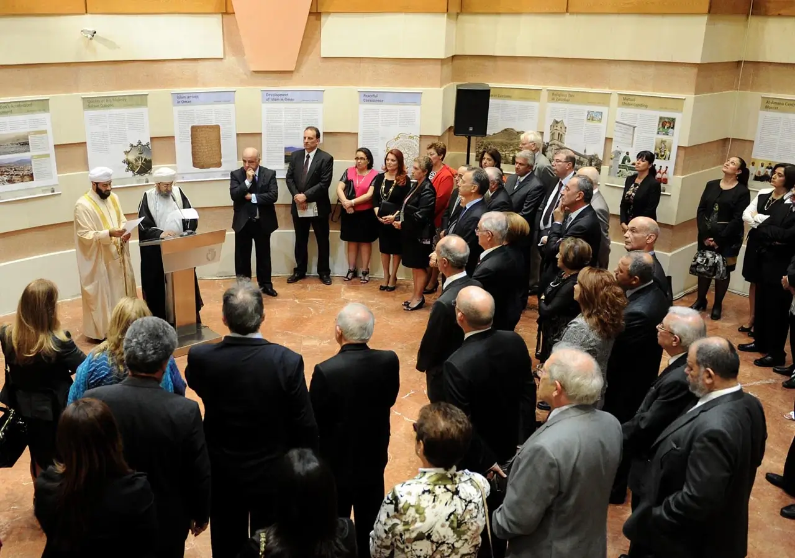

في عام 2009، تبنت وزارة الأوقاف والشؤون الدينية في عمان، بالتعاون مع أرابيا فيليكس سينفورم في ألمانيا، فكرة تنظيم معرض حول الحياة الدينية في سلطنة عمان، بهدف تعزيز الحوار بين الأديان، مع التركيز بشكل خاص على التسامح الديني، والتفاهم المتبادل والتعايش السلمي.
فلسفة المشروع تقوم على مزج المنظور الغربي والعماني، مما يجعل المعرض ممتعًا للجمهور الدولي ذو الخلفيات الثقافية المتنوعة.
يقدم المعرض نظرة ثاقبة لدور الإسلام في الحياة اليومية لمجتمع عربي عصري. ويتألف المعرض من مواد مطبوعة، ومجسمات ثلاثية الأبعاد، ووسائط رقمية. نواة المعرض هي مجموعة من أربع وعشرون لوحة بالألوان غنية بالصور والمعلومات. تثري النسخ المطبوعة حديثًا للمخطوطات القديمة، والنماذج المتنوعة للآثار القديمة مكان المعرض. كما يضيف فن الظل، والخط العربي، وعروض الأفلام مستوى فنيًا مشوقًا للمعرض. وتسمح شاشات الوسائط المتعددة للزوار بقراءة اللوحات المعروضة بلغات مختلفة، والاطلاع على مواضيع متنوعة بشكل أكثر تفصيلاً.

قم بتنزيل هذه الوثيقة حول معارضنا العالمية التسامح (باللغة الإنجليزية) »
بحلول مارس 2020، بلغ العدد الإجمالي للمعارض التي تم تنظيمها مائة وثمان وثلاثون معرضًا في سبع وثلاثون دولة، ومن المقرر المزيد في المستقبل. كما تمت ترجمة المعروضات إلى سبع وعشرون لغة، وتم ترجمة الفيلم الوثائقي "التسامح الديني في عمان" إلى أربع وعشرون لغة.
تم استضافة المعرض في مجموعة متنوعة من المؤسسات المختلفة. كمراكز تعليم الكبار، الجامعات، مجالس المدن، المكتبات، مقار الأمم المتحدة واليونسكو، الوزارات الحكومية، والمتاحف الشهيرة. وتم توظيف المعرض كنقطة جاذبة محورية في الاجتماعات والمؤتمرات والمناسبات الخاصة، المتعلقة بالحوار بين الأديان وكل ما يتعلق بتعزيز رسالة عمان في التسامح الديني والتفاهم المتبادل والتعايش السلمي.

➤ شاهد هذا الفيديو التعريفي لمعرض التسامح الدولي
تفضلوا بمشاهدة معرضنا العالمي الافتراضي للتسامح بلغتكم المفضلة